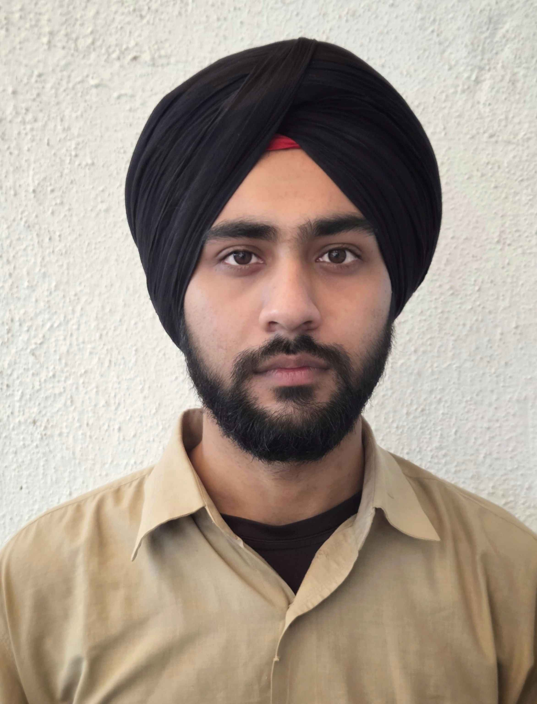

Theoretical & Computational Astrophysics — tracing dark matter capture, presolar grains, and the large-scale structure of the cosmos.

I am an M.Sc. Physics graduate from SVKM's Mithibai College, Mumbai University. My research interests span particle physics, dark matter physics, computational astrophysics, cosmology, general relativity, and quantum field theory. I am passionate about using computational methods to investigate fundamental questions about the nature of the Universe.
During my Master's thesis at the Indian Institute of Technology Hyderabad, I developed Python-based Monte Carlo simulations to study the capture and thermalization of Weakly Interacting Massive Particles (WIMPs) inside the Sun. My work focused on spin-independent (Operator 1) WIMP–nucleon interactions within the framework of non-relativistic effective field theory (NREFT), including particle trajectories, scattering events, and energy-loss processes using realistic solar models.
Previously, I completed a research internship at the Physical Research Laboratory (PRL), Ahmedabad, where I developed numerical simulations to investigate the destruction and survival of presolar silicate grains in supernova environments. I aspire to pursue a PhD in particle physics, dark matter physics, or computational astrophysics, contributing to our understanding of fundamental physics through theoretical modeling and scientific computation.
Indian Institute of Technology Hyderabad
Developed Python-based Monte Carlo simulations to model the capture and thermalization of WIMPs inside the Sun. Focused on spin-independent (Operator 1) WIMP–nucleon interactions within the non-relativistic effective field theory (NREFT) framework. Simulated particle trajectories, scattering events, and energy loss using standard solar models.
Physical Research Laboratory (PRL), Ahmedabad
Investigated the destruction and survival of presolar silicate grains in extreme astrophysical environments — particularly supernova explosions. Developed Python-based simulations to analyse the effects of grain size, velocity, and temperature on grain survival fractions using published astrophysical models. Results presented at the 5th METMESS Conference, IIST, 2025.
Open-source simulations and tools from my research work. View all on GitHub
Monte Carlo simulation of WIMP capture and thermalization inside the Sun. Models spin-independent WIMP–nucleon scattering using NREFT (Operator 1), with realistic solar density and composition profiles.
Monte Carlo modelling of WIMP capture, thermalization, and scattering cross-sections in solar interiors and underground detection experiments.
Large-scale structure of the universe, cosmic microwave background, and the dynamics of the dark sector.
Spacetime geometry, geodesic motion of particles, and strong-field effects around compact objects.
Particle physics foundations relevant to dark matter candidates, effective field theories (NREFT), and beyond-Standard-Model physics.
Numerical methods, Monte Carlo techniques, and high-performance Python simulations for astrophysical problems.
Poster Presentation
5th METMESS Conference · IIST, Thiruvananthapuram
Presented simulation results on the survival of presolar silicate grains in supernova shock environments to an international audience of meteoriticists and astrophysicists.
Online / International
Hands-on gravitational-wave data analysis using Python; signal processing, matched filtering, and parameter estimation with LIGO open datasets.
National Astronomical Observatory of Japan (NAOJ)
Lectures covering stellar evolution, galaxy formation, and time-domain astronomy; observing sessions on NAOJ instrumentation.
IISER Berhampur
Interdisciplinary school exploring entropy, thermodynamics of living systems, and the physical conditions necessary for the emergence of life.
Coursera
Applied Python to explore and analyse large astronomical datasets; SQL queries on astronomical catalogs, cross-matching, and machine learning classification.
I am open to PhD enquiries, research collaborations, and academic discussions in astrophysics and related fields. Feel free to reach out.